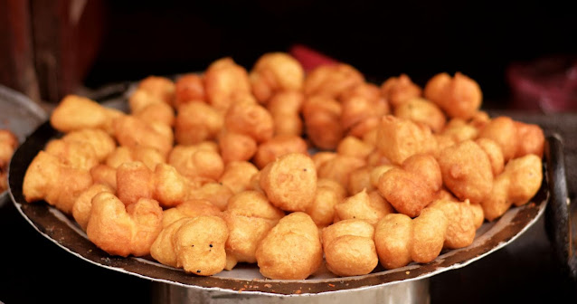

~~~~~~~~~~GWARMARI-RECIPE~~~~~~~~~~~

Utensils
- A deep bowl
- Frying pan
- Spatula
Ingredients
- Wheat Flour - Half Lb
- Baking powder - Half tea spoon
- Turmeric power - little
- Cumin and Coriander power - a pinch
- Ginger paste - little
- Garlic paste - little
- Cooking Oil - 300 ml
- Salt - as per taste
Method
- Mix wheat flour, baking powder, turmeric, cumin, coriander, ginger, garlic and salt in a deep bowl
- Stir the mixture properly till all get mixed
- Pour water to into the mixture stirring it continuously
- See that you get a good paste of the mixture (the paste should be medium - neither too thin nor thick, it should drop easily onto the pan while cooking)
- Keep the mixture for about 5 hours to get good taste (you can cook it immediately also)
- Heat the pan pour the oil, let the oil heat nicely (make sure that the mixture dough when cooking deep into the oil)
- Take about a table spoon of the mixture and drop into the hot oil. You can cook several of them at a time.
- See that all the doughs puff up
- Fry till they all become brown.
- Take those brownies out and soak the oil in a towel or a paper.
Serve hot Gwarmari!!!